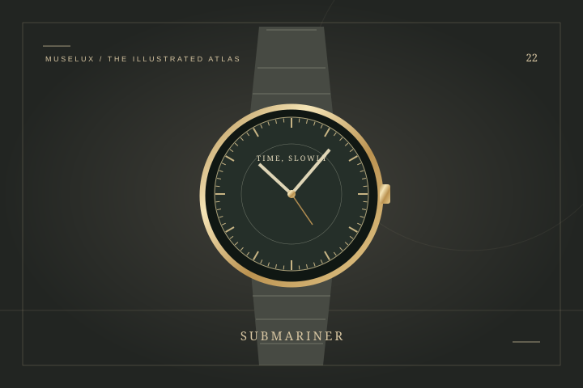

Rolex
Submariner潜航者
从潜水工具，读见清晰的力量。
打开词条 ↗THE HOUSE / 瑞士 / EST. 1905
劳力士 — 把可靠，慢慢做成一种风格
劳力士的故事，和腕表怎样从装饰走向可靠工具有关。汉斯·威尔斯多夫在伦敦创业，后来将公司迁至日内瓦，持续围绕精度、防水表壳与自动上链展开工作。蚝式结构与恒动摆陀，是理解品牌的两条线索；潜航者则让清楚的读时、可旋转表圈与坚实轮廓走到一起。认识它时，可以先看功能怎样影响外形，再看不同年代如何调整比例与细节。同一个系列名下，材质、尺寸与机芯并不完全相同。腕表的魅力固然包含历史，但真正戴上手以后，表耳贴不贴合、重量是否舒服，同样是值得认真回答的问题。
A FEW CHAPTERS IN TIME
Hans Wilsdorf 在伦敦创立钟表公司
注册 Rolex 名称
公司迁至日内瓦
推出 Oyster 蚝式表壳
推出恒动摆陀自动上链机制
Submariner 潜航者诞生
IN THE MUSELUX CATALOG
1 项收录：1 个经典设计词条。
KEEP READING